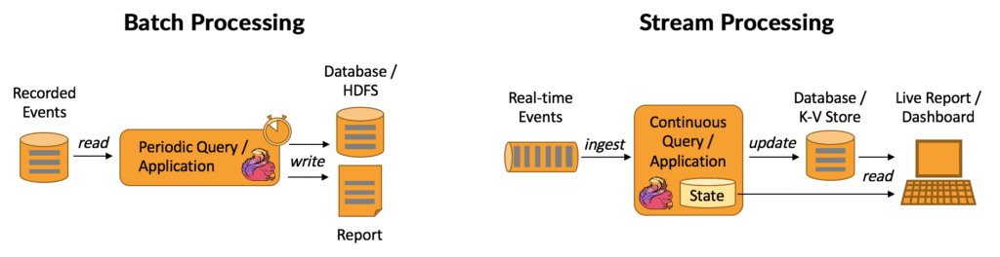
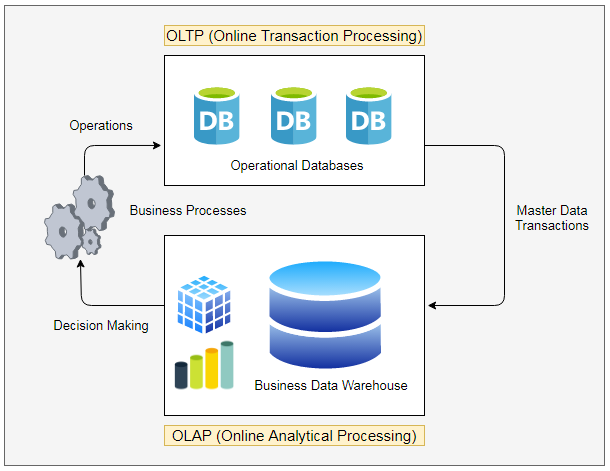
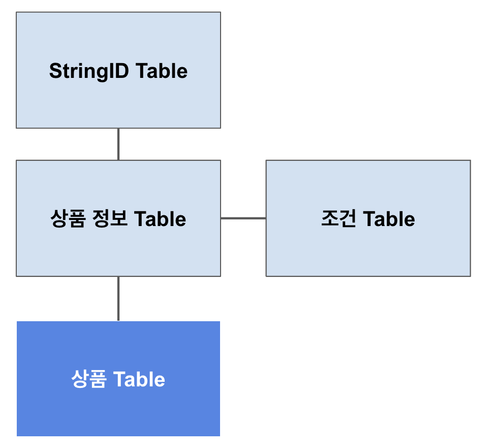
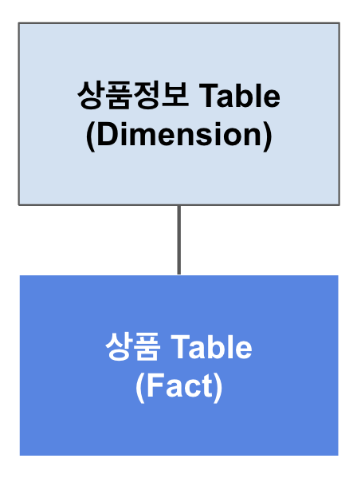

2.4 데이터 처리방식 알아보기#
SQL vs NoSQL#

SQL (Structured Query Language)#
관계형 데이터베이스(relational databases) 관리 시스템(이하 RDBMS)을 위한 언어입니다.
1980년대 이르러 Oracle 사의 주도로 상업화, 대중화 되었습니다.
국제적으로 공인된 표준 SQL이 있지만 DBMS 기업 제품(Oracle, SQL Server, MySQL 등) 별로 지원하는 기능 별로 구문이 다르거나 지원 기능 여부가 조금씩 차이가 있습니다.
NoSQL (Not Only SQL)#
관계형 데이터베이스의 한계를 극복하기 위해 만들어진 새로운 DBMS 언어입니다.
NoSQL 데이터베이스의 예시로는 Redis, MongoDB, Apache Cassandra, Neo4j 등이 있습니다.
SQL과는 다르게 DB별로 사용되는 문법이 차이가 큰 편입니다.
Batch Processing vs Streaming Processing#
Batch Processing#
주로 대용량의 (시간이 흐르면서 축적된 또는 고정된) 입력 데이터를 받아 작업을 실행한 후 output을 내놓게됩니다.
실시간으로 정보를 주고받는 것이 아니기 때문에, 데이터 처리 작업이 짧으면 분, 길면 며칠 단위로 소요될 수 있습니다.
그렇기 때문에 batch processing의 성능은 latency가 아니라 throughput으로 평가하는 경우가 많습니다.
대표적인 batch processing 작업으로 MapReduce를 들 수 있습니다.
Streaming Processing#
실제 데이터는 전혀 고정되어 있지 않습니다.
매 시간마다 새로운 데이터가 추가되거나 변경되는 게 현실 → 우리가 다루는 모든 데이터는 사실상 내재적으로
streaming data
주로 작은 용량의 데이터를 적은 latency 안에 실시간에 가깝게 처리합니다.
real-time processing과 구분하기 위해 near-real-time processing이라고도 부릅니다.
OLTP VS OLAP#
OLTP(Online Transaction Processing)#
OLTP는 특정 정보를 빠르게 조회하고 대규모의 온라인 트랜잭션(INSERT, UPDATE, DELETE)을 처리하는 데 특화되어 있습니다. OLTP 시스템의 주요 부분은 매우 빠른 쿼리 처리, 다중 액세스 환경에서 데이터 무결성 유지, 효율성(초당 거래 수)에 있습니다.
Low Latency & High Concurrency 를 목적으로 사용됩니다.
일반적으로 Row-Oriented 하며, 따라서 분석용으로는 적합하지 않습니다.
OLTP Schema 예시#
다음과 같이 정규화된 테이블 구조를 사용하여 쿼리 실행 속도에서 더 이점을 가져갈 수 있습니다.
위 테이블과 같은 구조를 아래 테이블 예시처럼 구현해 볼 수 있습니다.
상품 Table
상품ID |
구매유저ID |
상품갯수 |
가격 |
|---|---|---|---|
10001 |
139242 |
3 |
300 |
10002 |
482030 |
1 |
1000 |
상품 정보 Table
상품ID |
상품명_StringID |
개당가격 |
구매가능조건ID |
|---|---|---|---|
10001 |
12311 |
100 |
233 |
10002 |
22231 |
1000 |
311 |
StringID Table
StringID |
StringName |
Category |
|---|---|---|
12311 |
가짜연구소 입장권 |
상품 |
22231 |
DE4E 스터디 입장권 |
상품 |
34283 |
Hello World |
키워드 |
38204 |
데이터 엔지니어링 |
타이틀 |
조건 Table
구매가능조건ID |
조건명 |
|---|---|
233 |
제한없음 |
311 |
가짜연구소 소속인원 |
422 |
4년이상 실무종사자 |
OLAP(Online Analytical Processing)#
OLAP 데이터베이스는 OLTP 데이터베이스와 달리 대규모 데이터 집합을 처리하여 데이터에 대한 처리를 위해 설계되었습니다.
데이터 엔지니어는 일반적으로 OLAP 데이터베이스를 다룰 기회가 많게 됩니다.
OLTP가 고객의 거래 정보를 실시간으로 빠르게 처리하기 위해 존재한다면, OLAP 시스템에서는 다음과 같은 질문을 주로 다룹니다.
A 회사의 지난 1월 기준 전국 지역 매장의 총수입은 얼마인가?
가장 최근 수행한 온라인 프로모션 행사 이후 자사의 OO제품 판매량이 얼마나 더 증가하였는가?
원자성에 대한 요구가 OLTP 보다는 덜 요구되는 경향이 있습니다.
OLTP: 예를들어
돈 차감->상품구매과정에서 상품구매에 실패한다면 돈의 차감또한 RollBack되어야합니다.OLAP: 예를들어 집계시 12시간이 걸리는 작업에서 한개의 작업이 실패했을 경우 모두 RollBack 하는 방법도 있지만 실패한 작업에 대해서 Log를 남기고 집계한 후 추후 실패한 작업에 대해 재집계를 수행하고 값을 수정하는 방법또한 있습니다.
※ 단순 예시이며 OLAP에서도 원자성에 대해 고려하는것은 중요합니다. ※
OLAP Star Schema 예시#
최종적으로 유저가 구매한 상품정보를 알기위해서 해야하는 Join을 줄여 이점을 가져갈 수 있습니다.
위 테이블과 같은 구조를 아래 테이블 예시처럼 구현해 볼 수 있습니다.
상품 Table
상품ID |
구매유저ID |
상품갯수 |
가격 |
|---|---|---|---|
10001 |
139242 |
3 |
300 |
10002 |
482030 |
1 |
1000 |
상품정보 Table
상품ID |
상품명 |
구매가능 조건 |
|---|---|---|
10001 |
가짜연구소 입장권 |
제한없음 |
10002 |
DE4E 스터디 입장권 |
가짜연구소 소속인원 |